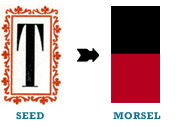
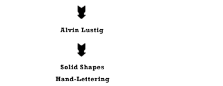
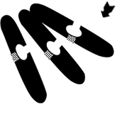

The Play Process / Introduction / 6 Steps
Case Studies / Under My Bed / Rhyming Slang / Fat Type
Extras / The Wall / Download / About Me
Fat is an imposing force. It’s hulking and bold, existing to enforce grand phrases and schemes. Breathe and finally forgive that tall kid on the bus that sang Fatty, Fatty 2x4. He’s probably dead now. Shake it off and don’t be size-shy. The Seed, from an old cookbook, set the mood for a tongue-in-cheek look at adult vices in candy form. The tall shape lent itself well to
a banner format. Red and black, a classic combination that’s aggressive, visually evoked a graphic, 1960s feel. Humor, thankfully, cuts effectively through that historical heaviness.

 Quick Brainstorming. A few rounds of quick thinking connected several possible visual directions for this Seed. How about some Alvin Lustig? Maybe a hint of Russian
to start the design?

Shape it out. Gut reaction says to make the whole damn thing red. Black shapes with white as an accent will really pop.
Content Through Evolution.
After rotating it a thousand times,
the image becames clear. A few more rounds of quick thinking made several connections with the created visuals. Smoke break, anyone? With this new direction in mind, content began to play on the juxtaposition of children’s choices becoming adult vices. Looking past all the surface ideas—cancer or death—a memory
as a child grows and solidifies.
Kid's remember their first addiction. Just the word causes salivation,
even as adults. Say it: candy. Down the road from the sweat shop on 32nd Street, all types littered the aisles of the single-pump gas station. Hard candy for 25¢. A child-sized handful of chewies for a dollar. Chalky and brittle, the best sweet came in a small pack wrapped in plastic. Candy cigarettes. White boxes with bold red type, conveniently placed on shelves at eye-level of child patrons, the white sticks looked genuine with their glowing cherry tips.
idea of candy, the hand-
lettered title needed a slickness to it. Several rounds of lettering encompassed Day Three, but eventually I settled
on this mix of upper and lowercase letterforms that suits the concept of a childish adult addiction.
The Story: Morning Glory. Candy cigarettes work as a great base narrative. From cigarettes come bubble-gum cigars that came in three flavors. Next comes lollipops, named after a certain breed of person that
are known to be suckers. The “Ladies of the Night” are the only sweet to
not actually exist. But understanding the cheeky mix of real candy and actual vices, soft and chewy candies can only be suitable as prostitute substitutes.
The texture is a fill of dots. To create more interest, the dots are used in lieu of shadows
to help give dimensionality.